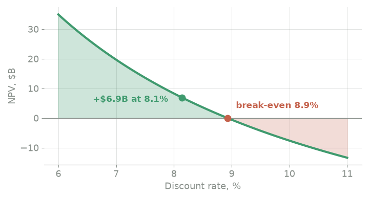
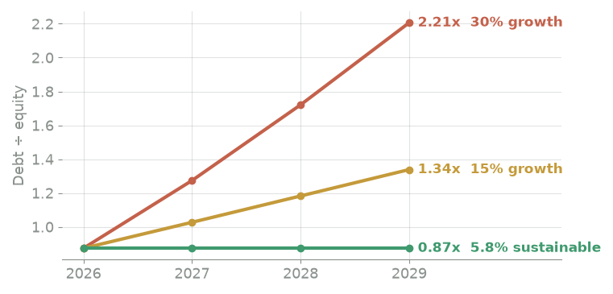
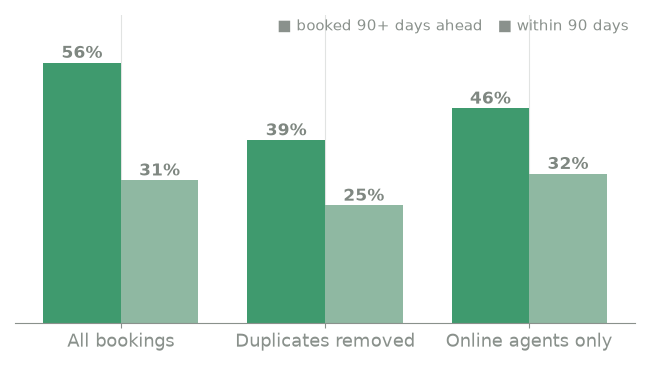
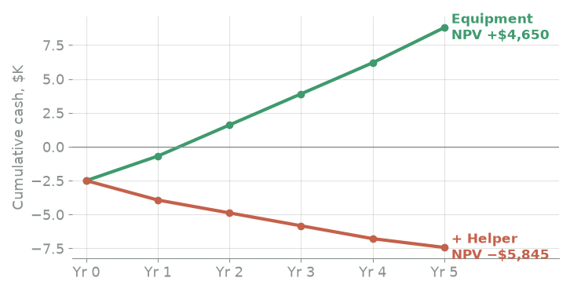
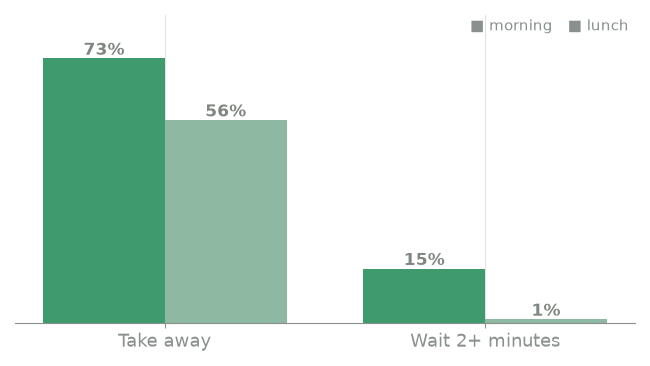
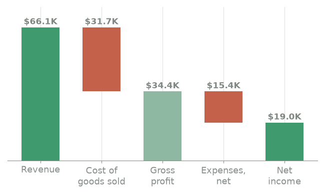

I turn business data into decisions someone can act on.
Master of Finance candidate at Hult International Business School and former product management intern at Techtronic Industries (Ryobi). I build valuation models, test hypotheses on real data and write the recommendation a manager can use.
Would you have paid $68 billion for Pioneer?
A 10-year DCF of ExxonMobil's 2024 acquisition of Pioneer Natural Resources, built from both companies' 10-K filings. Move the discount rate, synergies or growth and watch the NPV and the decision change.

Projects
Each one starts with a business question and ends with a recommendation. The three marked "Code" are rebuilt in Python, with tests that reproduce the graded numbers.
ExxonMobil: cost structure and the $68B Pioneer deal
Why profit fell 22% on a 3% sales drop, and whether the acquisition created value.

Mountain Mining: growing faster than it can afford
Sales up 63% while cash fell 71%. DuPont, sustainable growth and a projection of where 30% growth leads.

Do early hotel bookings cancel more?
A hypothesis test on 119,000 bookings, stress-tested three ways, turned into a cancellation-policy pilot.

Pravik's Kitchen: equipment, a helper, or both?
A sold-out one-person food business turns customers away. Break-even, high-low and an NPV capacity decision.

What causes the morning queue at a café?
We timed 220 customer parties on site, found what drives waiting and tested staffing options on the real arrivals.

Study Fuel: a full accounting cycle
Four weeks of a simulated business, from first journal entry to closed books and financial statements.
Background
I studied business administration at Rider University, then moved to Cambridge for a dual master's at Hult. I finish the Master of Finance in April 2027 and can start full-time now.
At Techtronic Industries I worked as a product management intern on the Ryobi line. I analyzed about 100,000 rows of product return data in Excel and built forecasts that fed product decisions, co-designed a riding mower concept with the intern team, and kept schedules moving across engineering and operations.
Outside of school I coach tennis. I work with 10 to 15 players a week and have organized more than 100 camps, clinics and match-play events.
- Financial modeling
- DCF & valuation
- Excel
- Python
- SQL
- Forecasting
- Statistics
- Accounting
- Market research
- NowHult International Business SchoolMaster of Finance, expected April 2027 · MSc Management, 2026
- 2024Rider UniversityB.S. Business Administration · GPA 3.6, Dean's List
- 2022Techtronic Industries (Ryobi)Product Management Intern
- 2020 to nowYM Tennis and Pretty Brook Country ClubTennis Pro
Let's talk
I'm looking for full-time analyst, finance, product and operations roles in the US.